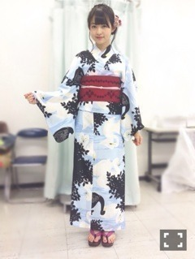
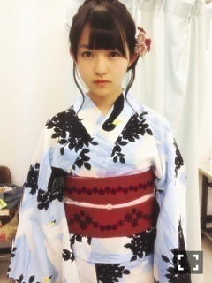

| 2013/08 13 Tue | 477回目*marika |
去年に引き続き
乃木どこで浴衣着た。

前回は白地に金魚柄。
今回は湖にスワン。
本当は違う柄に決めてたんだけど
みんなにまりかっぽいって言われて
この柄に決めました
 ふぁー
ふぁー
ふぁー
どうですか。
まりかっぽいですか。

帯等の小物は自分で選んだよー
帯の刺繍かわいい。赤色かわいい。
また着れる機会があったら
生き物柄かな

私は今まで夏に選抜入りしたので
これまでに2回
浴衣着ることが出来ました。
次も夏に入ったらきっと浴衣を
みなさんにお見せできる、
と思います。いえい！
というか、
浴衣欲しい！
マイ浴衣！
あ！えっと！
今回の乃木どこのこと。
怖い話大っ嫌いなので
スルーします！えっと、
スルーしますごめんなさい
逃
まりか
コメント(365)
2013/08/13 22:48